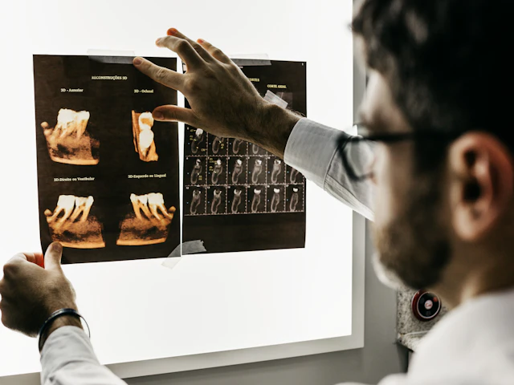

Tratamento
Implantes dentários
O implante é um pino de titânio colocado no osso para sustentar uma prótese no lugar de um dente ausente. Antes de qualquer indicação, a dentista examina, avalia o osso e explica as opções.

Para quem pode ser indicado
Para quem perdeu um ou mais dentes e tem gengiva saudável e osso suficiente, ou que possam ser tratados antes. A indicação sai da avaliação, não de uma regra geral.
- Repõe um dente sem desgastar os vizinhos.
- Pode sustentar uma coroa, uma ponte ou uma prótese maior.
- Exige cuidado diário e revisões, como um dente natural.
Passo a passo
Como o implante é feito
Role a página ou toque em cada etapa.
Avaliação e planejamento
Exame clínico, radiografias e, quando necessário, tomografia. A dentista define posição e tipo do implante e explica o plano por escrito.
Cirurgia
Com anestesia local, o implante é colocado no osso. A duração depende do caso.
Cicatrização
O osso se integra ao implante. O tempo varia e é definido pela dentista, com revisões no caminho.
Coroa e manutenção
Depois da cicatrização entra a coroa definitiva. Higiene diária e revisões mantêm o implante saudável.
Comparador
Antes e depois, em ilustração
Arraste a divisória para comparar um sorriso com um dente ausente e o mesmo sorriso com o espaço preenchido.
Exemplo ilustrativo. Desenho criado para explicar o tratamento. Não é um caso real nem promessa de resultado.
Casos reais só são exibidos com termo de consentimento do paciente e responsabilidade da cirurgiã-dentista.
Guia
O que esperar
Duração da cirurgia
Varia com o número de implantes e a condição do osso. A estimativa é dada no planejamento.
Anestesia
Local, na região tratada. Você fica acordado e pode pedir pausa.
Retorno
Uma revisão é marcada depois da cirurgia para acompanhar a cicatrização.
Manutenção
Higiene diária com escova e fio ou escova interdental, e revisões periódicas.
Cuidados depois da cirurgia
- Seguir a medicação indicada.
- Evitar esforço no primeiro dia.
- Manter a higiene como orientado.
- Avisar a clínica em caso de dor intensa, inchaço que aumenta ou sangramento que não para.
Orientações gerais. Siga sempre a orientação do seu cirurgião-dentista.
Perguntas sobre implantes
O implante precisa de osso para ficar firme. Quando falta osso, pode ser possível fazer um enxerto antes. A dentista avalia o seu caso na consulta.
Depende da cicatrização de cada pessoa e de etapas extras, como enxerto. O prazo aparece no plano por escrito. A dentista avalia o seu caso na consulta.
Em muitos casos é possível usar uma prótese provisória enquanto o osso cicatriza. Isso depende da região e da condição do osso. A dentista avalia o seu caso na consulta.
O cigarro prejudica a cicatrização e aumenta o risco de complicações. Se você fuma, conte na consulta para planejar os cuidados. A dentista avalia o seu caso na consulta.
Outros tratamentos


Quer conversar sobre o seu caso?
Na avaliação, a dentista examina, explica as opções e entrega o plano por escrito.